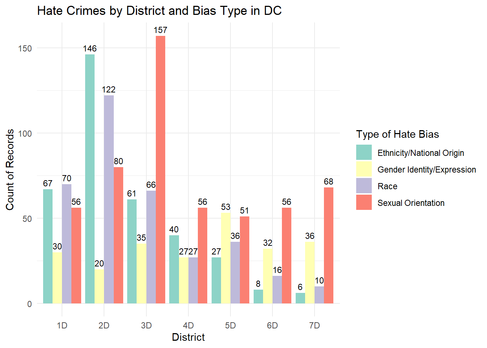
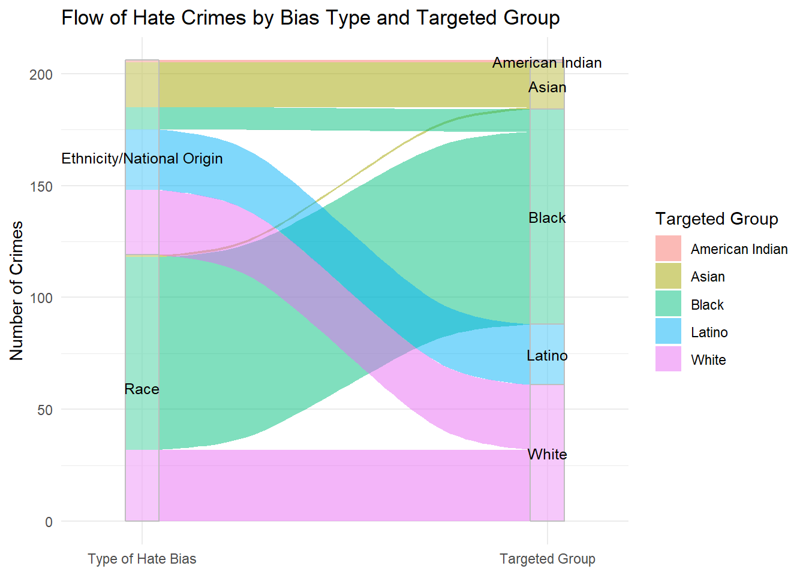
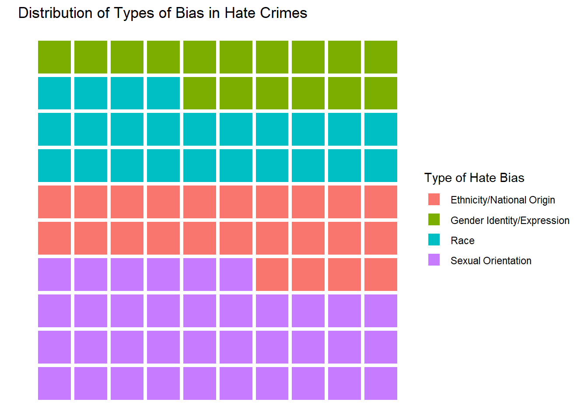
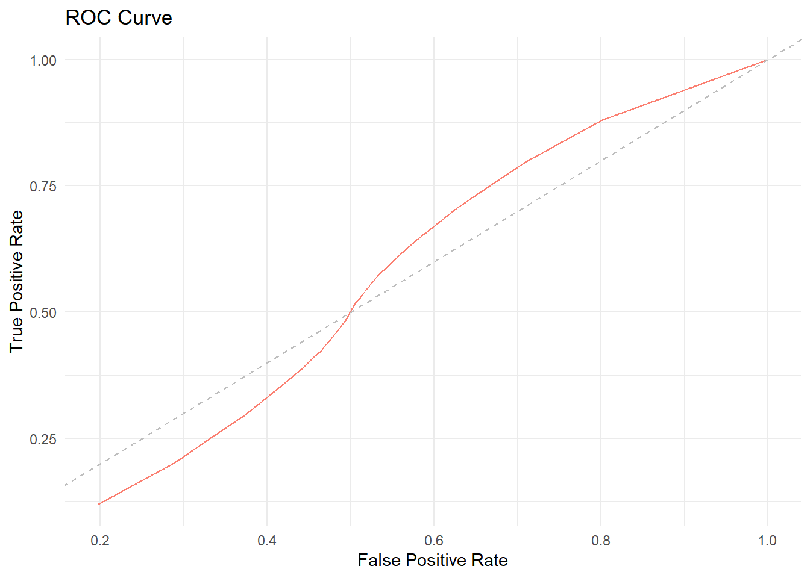
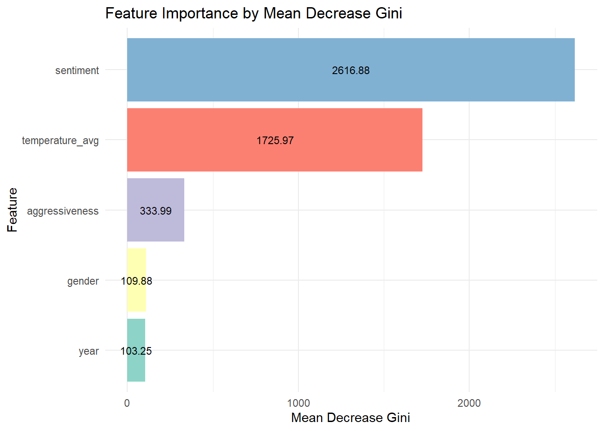
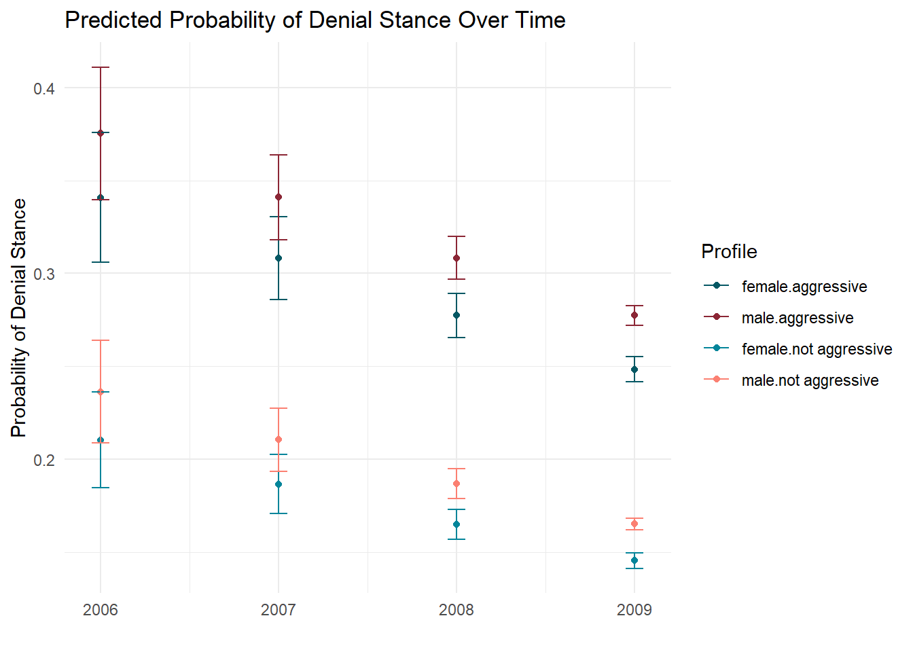

American Indian Asian Black Latino Unknown
2 66 252 106 874
White
159
The classification was done mostly on the basis of the mapping between geography and the categories. Characteristics such as religion (e.g. being jewish) were assign to “unknown”. Also to this later category was assigned all non clear classifications and missing values.
In comparison with the Github issue this version has more observations, which could be because of discrepancies in how to deal with the white category. Here I opted to include the Middle Eastern and Arabs as White because they fit the general definitions of the Census and people that speak Arabic come from the Middle East and North African countries. Actually, this discrepancies in which races are considered white is a subject of debate (https://www.npr.org/2022/02/17/1079181478/us-census-middle-eastern-white-north-african-mena).
Question 2: Exploratory Data Visualization of Hate Crimes data (15 points)
Plot 1: Bar Plot (hc1)
# Step 1: Summarise the datahc_counts <- hc_alltargets %>%group_by(district_clean, Type.of.Hate.Bias) %>%summarise(count_ =n(), .groups ='drop')# Plot 1: Bar Plotggplot(hc_counts, aes(x = district_clean, y = count_, fill = Type.of.Hate.Bias)) +geom_bar(stat ="identity", position ="dodge") +geom_text(aes(label = count_), position =position_dodge(width =0.9), vjust =-0.5, color ="black", size =3) +scale_fill_brewer(palette ="Set3") +labs(title ="Hate Crimes by District and Bias Type in DC",x ="District",y ="Count of Records",fill ="Type of Hate Bias") +theme_minimal() +theme(legend.position ="right") +guides(fill =guide_legend(ncol =1))

What immediately pops out are district 2 and 3. The former with very high rates of ethnicity and race based crimes and the later with a large number of sexual orientation hate crimes. It is interesting that District 3 seems to comprise the most night-life neighborhoods in the city and District 2 has the areas with the highest income.
Plot 2: Alluvial Flow Diagram (hc2)
#Find the district with the max number of crimeshc_counts <- hc_censustargets %>%group_by(district_clean) %>%summarise(count_ =n(), .groups ='drop') %>%arrange(desc(count_)) highest_d = hc_counts %>%slice(1) %>%pull(district_clean)highest_d
[1] "2D"
hc_plot <- hc_censustargets %>%filter(district_clean == highest_d) %>%group_by(Type.of.Hate.Bias, tg_census) %>%summarise(count_ =n(), .groups ='drop')# Plot 2: Alluvial Flow Diagramggplot(hc_plot, aes(axis1 = Type.of.Hate.Bias, axis2 = tg_census, y = count_)) +geom_alluvium(aes(fill = tg_census), width =1/12) +geom_stratum(alpha = .25, width =1/12, color ="grey") +geom_text(stat ="stratum", aes(label =after_stat(stratum)), size=3.3) +scale_x_discrete(limits =c("Type of Hate Bias", "Targeted Group"), expand =c(0.1, 0.1)) +labs(title ="Flow of Hate Crimes by Bias Type and Targeted Group", y ="Number of Crimes",fill ="Targeted Group") +theme_minimal()

Latino, American Indian and Asian all come from ethnicity or national origin (with the exception of a couple of Asian observations), while race is mostly focus on white and black. This raises questions about the usage of this categories by the Census and how the many cases in white might be making it more difficult to identify hate crimes due to ethnicity.
Plot 3: Square Area Chart (hc1)
hc_plot <- hc_alltargets %>%group_by(Type.of.Hate.Bias) %>%summarise(perc_ =round(n()/nrow(hc_alltargets) *100), .groups ='drop') %>%arrange(desc(perc_)) sq_values =data.frame(expand.grid(1:10, 1:10))sq_values$hate_bias =c(rep(as.vector(hc_plot$Type.of.Hate.Bias), as.vector(hc_plot$perc_)))ggplot(sq_values, aes(x = Var1, y = Var2, fill = hate_bias)) +geom_tile(color ="white",lwd =1.5,linetype =1) +coord_fixed() +labs(title ="Distribution of Types of Bias in Hate Crimes", y ="", x ="",fill ="Type of Hate Bias") +theme_void()

The most prevalent type of hate crime is by sexual orientation. However, one might make this 4 categories into just 2 (race and ethnicity v sexual orientation and gender identity) and the sum of both will be roughly the same. In other words, one out of every 2 hate crimes will belong to one of those grand categories.
Question 3: Automating quarto reports (15 points)
See other files in submission.
Question 4: Model Visualizations - Machine Learning (10 points)
library(randomForest)library(lubridate)library(tidyverse)tweets <-read.csv("Twitter.csv")tweets$created_at <-ymd_hms(tweets$created_at)tweets$year <-year(tweets$created_at)# Filter out neutral stancestweets_filtered <- tweets %>%filter(stance !="neutral") %>%mutate(stance_binary =ifelse(stance =="denier", 1, 0)) # 1 = denier, 0 = believer# Convert it into binary variablestweets_filtered$stance_binary <-as.factor(tweets_filtered$stance_binary)# Remove any na valuestweets_filtered <-na.omit(tweets_filtered)# Convert categorical variables into factorstweets_filtered$aggressiveness <-as.factor(tweets_filtered$aggressiveness)tweets_filtered$gender <-as.factor(tweets_filtered$gender)# Splitting the data into training and testing sets (80% train, 20% test)set.seed(123) train_index <-sample(1:nrow(tweets_filtered), 0.8*nrow(tweets_filtered))train_data <- tweets_filtered[train_index, ]test_data <- tweets_filtered[-train_index, ]# Fit the Random Forest modelrf_model <-randomForest(stance_binary ~ sentiment + aggressiveness + gender + temperature_avg + year, data = train_data, ntree =100, importance =TRUE)## your code here# Print model summaryprint("Train performance")
[1] "Train performance"
print(rf_model)
Call:
randomForest(formula = stance_binary ~ sentiment + aggressiveness + gender + temperature_avg + year, data = train_data, ntree = 100, importance = TRUE)
Type of random forest: classification
Number of trees: 100
No. of variables tried at each split: 2
OOB estimate of error rate: 19.65%
Confusion matrix:
0 1 class.error
0 65742 82 0.001245746
1 16022 99 0.993858942
# Getting the predictions on the test data and calculating the confusion matrixlibrary(caret)print("Test performance")
Confusion Matrix and Statistics
Reference
Prediction 0 1
0 16408 26
1 4039 14
Accuracy : 0.8016
95% CI : (0.7961, 0.807)
No Information Rate : 0.998
P-Value [Acc > NIR] : 1
Kappa : 0.003
Mcnemar's Test P-Value : <2e-16
Sensitivity : 0.802465
Specificity : 0.350000
Pos Pred Value : 0.998418
Neg Pred Value : 0.003454
Prevalence : 0.998048
Detection Rate : 0.800898
Detection Prevalence : 0.802167
Balanced Accuracy : 0.576232
'Positive' Class : 0
# Function to calculate TPR and FPRcalculate_rates <-function(actual, predicted, threshold) { predicted_class <-ifelse(predicted >= threshold, 1, 0) tp <-sum(actual ==1& predicted_class ==1) fp <-sum(actual ==0& predicted_class ==1) fn <-sum(actual ==1& predicted_class ==0) tn <-sum(actual ==0& predicted_class ==0) tpr <- tp / (tp + fn) fpr <- fp / (fp + tn)return(c(tpr, fpr))}# Generate ROC curve pointsgenerate_roc_points <-function(actual, predicted, thresholds) { roc_points <-sapply(thresholds, function(thresh) {calculate_rates(actual, predicted, thresh) })return(t(roc_points))}# Calculating the ROCthresholds <-seq(0, 1, by =0.01)test_data$predictions = rf_predictionspredicted_probs =predict(rf_model, test_data, type="prob") # To get the probabilities rather than the categoriesroc_points <-generate_roc_points(test_data$stance_binary, predicted_probs, thresholds)roc_df <-data.frame(FPR = roc_points[,2], TPR = roc_points[,1])# Plot the ROC curveggplot(roc_df, aes(x = FPR, y = TPR)) +geom_line(color="#fb8072") +geom_abline(intercept =0, slope =1, linetype ="dashed", color ="gray") +ggtitle("ROC Curve") +theme_minimal() +labs(x ="False Positive Rate", y ="True Positive Rate")

# Get importance values as a data frameimp =as.data.frame(importance(rf_model))imp =cbind(vars=rownames(imp), imp)imp = imp[order(imp$MeanDecreaseGini),]imp$vars =factor(imp$vars, levels=unique(imp$vars))ggplot(imp, aes(x = vars, y = MeanDecreaseGini, fill = vars)) +geom_bar(stat ="identity", position ="stack") +geom_text(aes(label =sprintf("%.2f", MeanDecreaseGini)), position =position_stack(vjust =0.5), color ="black", size =3) +scale_fill_brewer(palette ="Set3") +labs(title ="Feature Importance by Mean Decrease Gini",x ="Feature",y ="Mean Decrease Gini") +theme_minimal() +theme(legend.position ="none") +coord_flip()

The most important feature for the classification is the sentiment followed by the temperature. These two features are by far the most important for the tree.
On the other hand, this tree is not a very good classifier, its ROC curve is very close to the random line. Which means that its classification is not an improvement from a coin toss.
Question 5: Model Visualizations - Statistics (12 points)
library(caret)# Creating the model with the data defined in the previous point# In order to compare between the profiles it is necessary to add the year to the modelglm_model <-glm(stance_binary ~ gender + aggressiveness + year, data = tweets_filtered, family =binomial(link ="logit"))summary(glm_model)
Call:
glm(formula = stance_binary ~ gender + aggressiveness + year,
family = binomial(link = "logit"), data = tweets_filtered)
Coefficients:
Estimate Std. Error z value Pr(>|z|)
(Intercept) 2.985e+02 5.300e+01 5.633 1.78e-08 ***
gendermale 1.497e-01 1.821e-02 8.221 < 2e-16 ***
genderundefined 5.448e-05 5.973e-02 0.001 0.999
aggressivenessnot aggressive -6.629e-01 1.610e-02 -41.171 < 2e-16 ***
year -1.491e-01 2.638e-02 -5.653 1.57e-08 ***
---
Signif. codes: 0 '***' 0.001 '**' 0.01 '*' 0.05 '.' 0.1 ' ' 1
(Dispersion parameter for binomial family taken to be 1)
Null deviance: 101642 on 102431 degrees of freedom
Residual deviance: 99841 on 102427 degrees of freedom
AIC: 99851
Number of Fisher Scoring iterations: 4
gender aggressiveness year predict_prob lower upper
1 female aggressive 2006 0.3408722 0.3060664 0.3756780
2 male aggressive 2006 0.3752550 0.3395359 0.4109741
3 female not aggressive 2006 0.2104375 0.1846288 0.2362463
4 male not aggressive 2006 0.2363821 0.2087867 0.2639775
5 female aggressive 2007 0.3082011 0.2857486 0.3306536
6 male aggressive 2007 0.3409933 0.3181207 0.3638660
7 female not aggressive 2007 0.1867264 0.1707203 0.2027325
8 male not aggressive 2007 0.2105271 0.1935702 0.2274841
9 female aggressive 2008 0.2773438 0.2654409 0.2892467
10 male aggressive 2008 0.3083160 0.2969245 0.3197076
11 female not aggressive 2008 0.1651282 0.1570450 0.1732114
12 male not aggressive 2008 0.1868083 0.1787800 0.1948366
13 female aggressive 2009 0.2484663 0.2417035 0.2552291
14 male aggressive 2009 0.2774518 0.2721723 0.2827313
15 female not aggressive 2009 0.1455810 0.1414307 0.1497313
16 male not aggressive 2009 0.1652025 0.1620457 0.1683594
ggplot(data_topredict_wpred, aes(x = year, y = predict_prob, color =interaction(gender, aggressiveness))) +geom_point() +geom_errorbar(aes(ymin = lower, ymax = upper),width =0.1) +scale_color_manual(values =c("#055864", "#8B2635", "#03859A", "#fb8072")) +labs(title ="Predicted Probability of Denial Stance Over Time",x ="", y ="Probability of Denial Stance",color ="Profile") +theme_minimal()

The first thing to notice is that the probability of a tweet denying that humans have an influence in climate change is declining over the years. This could be due to the fact that later years have more data (as seen in previous points and suggested by the CI of 2006 and 2007 vs 2008 and 2009) and in the early ones it is more difficult to see a pattern.
Also, the probability of having a denial stance is higher on the aggressive tweets, regardless of the gender of the author. This suggest that people that deny the effect humnas have on climate change express their views in a more aggressive matter.
Finally, since 2008 there is a difference in gender on having a denial stance. Even tough the differences remain bigger in aggressiveness among females (the ones that write aggressive tweets are related with a higher probability of having a denial stance), this group has a lower probability of having a denial stance than their male counterparts of the same aggressive tendency.
Then, to analyse the tweets it is necessary to keep in mind that the time they are written matters, that there is a gender component to it and that denier attitudes seem to be related with aggressivess.